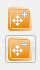
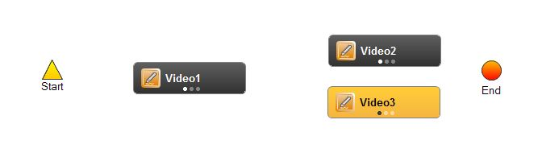
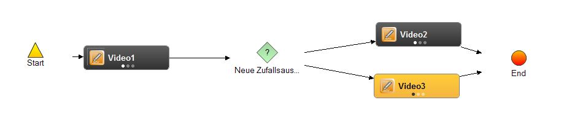
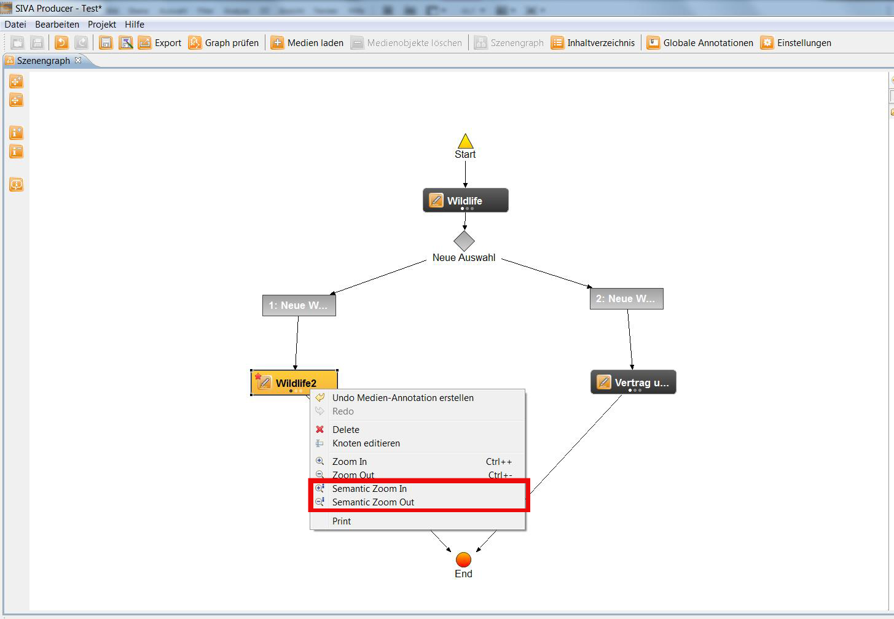
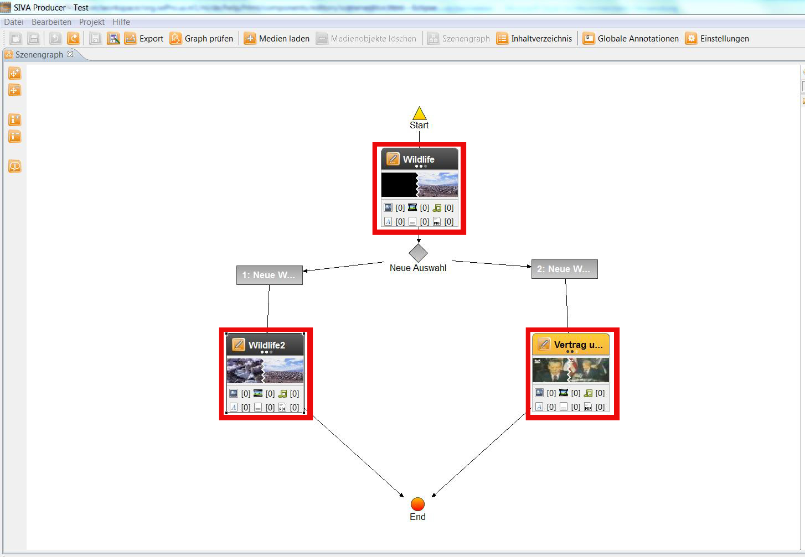
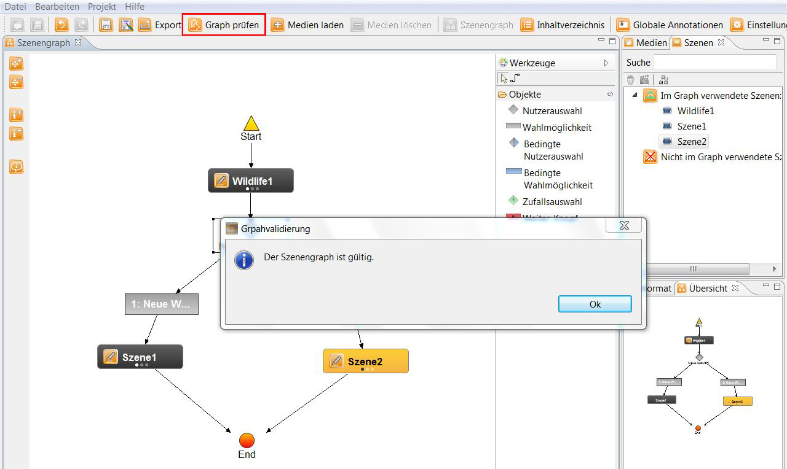
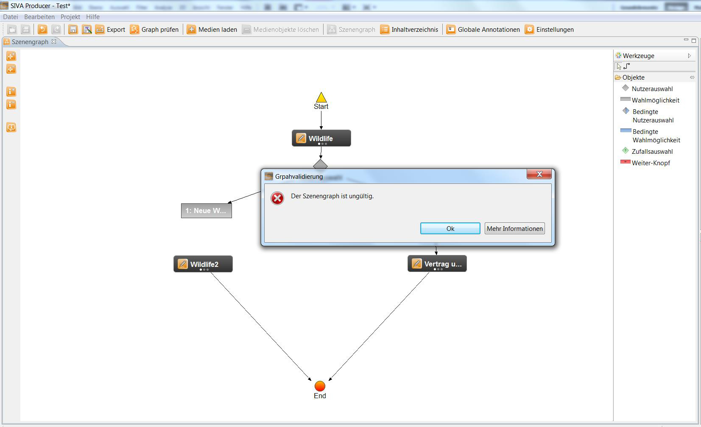

Szenengrapheditor
Der Szenengrapheditor hilft Ihnen beim Erstellen und Zusammenfügen Ihres Projekts.
Er wird verwendet, um die definierten Szenen in einem Graphen anzuordnen und so den Ablauf im interaktiven Video
festzulegen. Es gibt zwei Arten von Inhalts-Knoten: Szenenknoten, die eine Szene im Video darstellen und
Auswahlknoten, die dem späteren Betrachter eine Auswahlmöglichkeit für Nachfolgeszenen bieten. Außerdem gibt es
Funktionsknoten, wie zum Beispiel einen Start- und einen Endknoten, die der Organisation des Graphen dienen.
Feste Elemente eines jeden Graphen sind ein Start- und ein Endknoten, sowie mindestens ein Szenenknoten. Weiterhin muss es
von jedem Knoten aus einen Pfad zum Ende des Videos geben (keine Sackgassen).
Der Szenengrapheditor kann geöffnet werden indem man in der Funktionsleiste auf "Szenengraph" klickt.

Außerdem kann der Szenengraph durch einen Rechtsklick in das Szenen-Repository und Auswahl von "Szenengraph öffnen"
im dann erscheinenden Menü geöffnet werden.
Nun öffnet sich der Szenengraph:

Im Folgenden erfahren Sie mehr über die Anwendung der Werkzeuge und Objekte im Szenengraphen der SIVA Suite:
Auf der linken Seite des Szenengraphen befinden sich 5 Buttons:
 Mit den oberen beiden kann in die Arbeitsfläche
hinein- und herausgezoomt werden.
 Mit dem dritten und
vierten können Sie sich durch den semantischen Zoom weitere Informationen zu den Videos im Szenengraphen anzeigen
lassen, zum Beispiel ein Vorschaubild und die Anzahl der zu einem Video erstellten Annotationen.
Mit dem dritten und
vierten können Sie sich durch den semantischen Zoom weitere Informationen zu den Videos im Szenengraphen anzeigen
lassen, zum Beispiel ein Vorschaubild und die Anzahl der zu einem Video erstellten Annotationen.
 Wenn man
den letzten Button, das semantische Fisheye-Zooming, aktiviert, so kann man, wenn man mit dem Maus-Pfeil über die
Szene im Szenengraphen fährt, beispielsweise ein Vorschaubild sehen.
Wenn man
den letzten Button, das semantische Fisheye-Zooming, aktiviert, so kann man, wenn man mit dem Maus-Pfeil über die
Szene im Szenengraphen fährt, beispielsweise ein Vorschaubild sehen.
Auf der weißen Fläche des Szenengraphen finden Sie bereits ein Start- und ein Endelement. "Start" markiert das
Video, womit das Videotool beginnen soll. Das letztgezeigte Video muss mit "End" verknüpft werden.

Erstellen eines Szenengraphen
Bereits definierte Szenen werden in einem Szenenrepository verwaltet, aus welchem via Drag and Drop einzelne Szenen
in den Szenengraphen eingefügt werden können. Der Editor erlaubt dem Autor verschiedene Szenenanordnungen im Graphen,
wodurch neben einfachen linearen Abläufen auch Sprünge im Video oder nonlineare Verläufe modellierbar sind und
übersichtlich visualisiert werden.
Die Toolbar des Szenengraph-Editors kann auf der rechten oder linken Seite des Graphen positioniert werden (durch Drag
and Drop). Sie bietet Tools zum Löschen und Hinzufügen von Knoten und Kanten.
Zwischen den Szenen kann man Verzweigungen mit mehreren Pfaden/Alternativen einfügen. Durch diese kann der Nutzer
den Ablauf des interaktiven-Videos auswählen.

Per Drag-and-Drop fügen Sie ein Video ein und verknüpfen es mit Hilfe des Verbindungswerkzeugs mit dem Start- sowie
dem Endelement indem Sie die beiden Elemente, die Sie verbinden wollen, jeweils mit einem Mausklick auswählen. Bevor
dies möglich ist, muss das Video in eine Szene mit Hilfe des
Szeneneditors umgewandelt werden, da im Szenengrapheditor nur mit einzelnen Szenen gearbeitet werden kann.
Schon hätten Sie Ihren ersten funktionsfähigen Szenengraphen gebaut!
Das Erstellen einer Videoauswahl funktioniert wie folgt: Ziehen Sie alle nötigen Videoszenen in den Szenengraph.
Beachten Sie dabei, dass ein Video als Introvideo am Beginn des Szenengraphen direkt nach "Start" stehen muss.

Nun fügen Sie eine "Nutzerauswahl" und die passende Zahl "Wahlmöglichkeiten" ein. Hier sehen Sie, wie der
Aufbau verknüpft werden muss: Auf ein Video folgt eine Auswahl, weshalb von diesem ein Pfeil zu "Neue Auswahl"
gesetzt werden muss. Da es sich um die Wahlmöglichkeit zwischen zwei Videos handelt, müssen zwei graue
"Wahlmöglichkeit"-Objekte mit der Auswahl und den Videos, die durch Klick auf die Wahlmöglichkeit abgespielt
werden sollen, verknüpft werden.

Der Name der Auswahl ist zugleich der Titel, der auch im exportierten Projekt angezeigt wird. Mit Doppelklick
auf die Auswahl kann folgender Editor geöffnet werden. Hier können Sie den Titel ändern, die Anzeigereihenfolge
der Auswahlmöglichkeiten ändern und einstellen, ob nach einer bestimmten Verweildauer der Benutzer auf der Auswahl
eine der Wahlmöglichkeiten automatisch abgespielt werden soll. Den Titel der Wahlmöglichkeiten können Sie ebenfalls
mit Klick auf diese im Szenengraphen ändern.

Die Anwendung der "Bedingten Nutzerauswahl" funktioniert wie die der normalen "Nutzerauswahl". Einziger Unterschied
ist, dass Sie mit einem Doppelklick auf die Wahlmöglichkeiten im sich öffnenden "Pfad-Editor" eine oder mehrere Szenen
als Vorraussetzung für diese Wahlmöglichkeit setzen können - wenn also gewünschte Szenen noch nicht gesehen wurden,
bleibt die Wahlmöglichkeit unsichtbar. Einfach den Haken setzen und mit gedrückter STRG-Taste die gewünschten
Vorraussetzungen auswählen und im untenliegenden Feld die Bedingungen für den Nutzer verschriftlichen.

Bei einer Zufallsauswahl müssen Sie lediglich die Videos, von denen eines zufällig ausgewällt werden soll,
mit der Auswahl verknüpfen, es sind keine Wahlmöglichkeiten nötig.

Ein weiteres Objekt ist der "Weiter-Knopf". Wenn Sie diesen zwischen zwei Videos einsetzten, wird das
eine Video mit Klick auf den Button direkt nach dem anderen abgespielt.

Weitere Informationen zur
Werkzeugleiste finden Sie hier.
Ein fertiges SIVA-Projekt könnte am Ende etwa so aussehen. Hier wurden nur die normale "Nutzerauswahl" verwendet.

Den Szenen können Sie Annotationen hinzufügen.
Wurden Annotationen hinzugefügt, so gibt es eine weitere Ansicht des Szenengraphens, die einen besseren Überblick erlaubt.
Per Rechtsklick auf eine der Szenen öffnet sich ein Fenster. Hier klickt man auf "Semantic Zoom In" um eine detailliertere
Ansicht zu erhalten. Nun erhält man direkt unterhalb der Szene eine Übersicht über die Annotationen, die dieser Szene hinzugefügt
wurden.


Wählt man "Semantic Zoom In" ein weiteres Mal aus, so werden alle drei Punkte unter dem Vorschaubild schwarz gefärbt und
man sieht wie lange die Szene dauert, was die Quelle der Szene ist und die einzelnen Annotationen werden mit Namen aufgelistet.

Zum Schluss können Sie mit einem Klick auf "Graph prüfen" in der Funktionsleiste überprüfen, ob der Graph
vollständig verknüpft wurde, oder ob es noch unverknüpfte Elemente gibt. Wenn alles ordentlich verbunden ist und der
Graph mit dem "Start"-Objekt beginnt und dem "End"-Objekt endet, erscheint eine Bestätigung, dass der Graph gültig ist und
das Projekt kann
exportiert werden.

Ist der Graph nicht vollständig verknüpft, so erscheint eine Fehlermeldung, dass der Graph ungültig ist. Um genauere Informationen
darüber zu erhalten, was an dem Graph unvollständig ist, kann man auf "Mehr Informationen" klicken.
